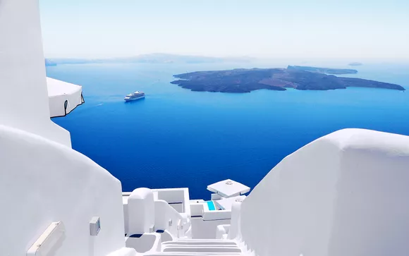
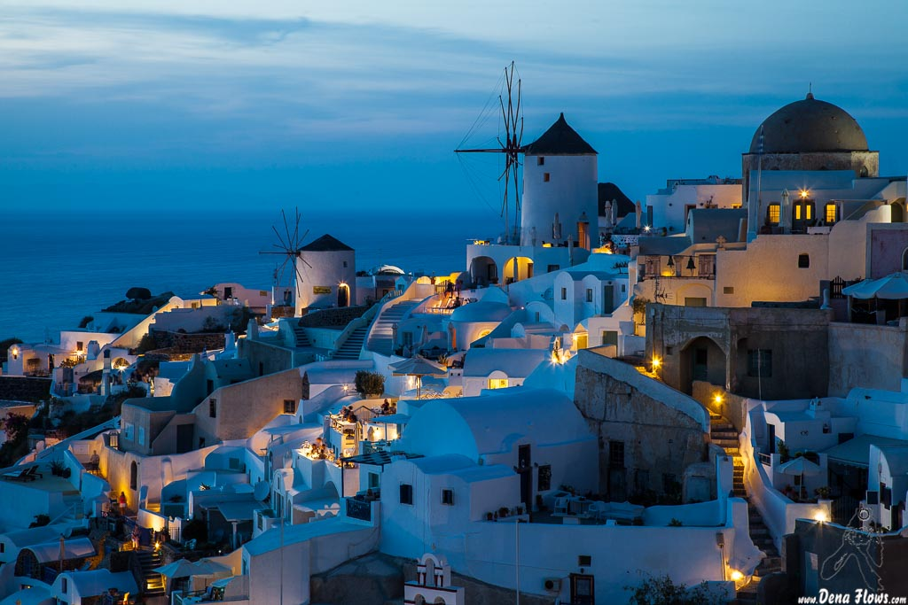
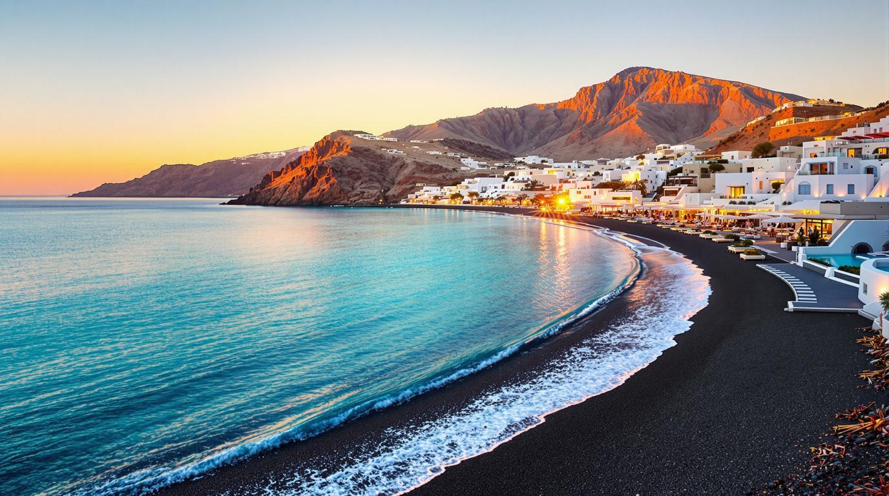
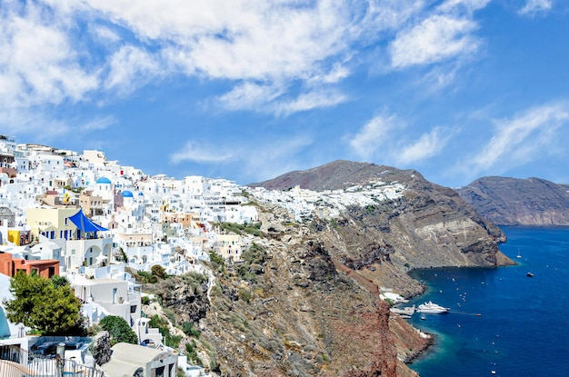

Santorini (Grecia)
Santorini es una de las islas más icónicas del mar Egeo, conocida por sus casas blancas, cúpulas azules y acantilados que se asoman al mar. Cada rincón ofrece vistas espectaculares que atraen a visitantes de todo el mundo.
Sus pueblos, como Oia y Fira, destacan por su arquitectura tradicional y sus atardeceres mágicos. Además, la isla cuenta con playas volcánicas únicas, con arena negra y roja.
La gastronomía local, basada en productos frescos como el tomate cherry y la fava, junto con su vino blanco Assyrtiko, hacen de Santorini un destino perfecto para disfrutar de la cultura griega.
Galería


